IMDA Data Submission SOP
This SOP follows the same order shown in the IMDA testing portal sidebar so users can move through the guide and the portal uniformly.
Testing Portal
Use the IMDA testing database for validation: https://ibdc.dbt.gov.in/imda_test/.
Before You Start
Complete these checks before beginning a new submission.
Data and File Preparation
- File Integrity (MD5): Prepare raw and derived data files. Complex raw data folders must be compressed into individual ZIP archives before transfer. Generate an MD5 checksum for each ZIP file.
- Filename Compliance: Use only letters, numbers, hyphens, underscores, and dots in file names. Do not use spaces or special characters.
- Data Structure: Organize raw data into clear local folders before compression.
- FTP Tool: Install an FTP client such as FileZilla for large file transfer.
- Format Preference: Use open data formats where possible. IMDA prefers mzML for MS data and nmrML for NMR data, while accepting other MS/NMR formats where required.
User and Metadata Requirements
- User Account: Create an IMDA user account if you do not already have one.
- Attribution: Collect name, email, and affiliation details for the Principal Investigator and all contributing authors.
- Required Documentation: Prepare a study summary, keywords, publication DOI where applicable, and ethical or institutional approval numbers such as IBSC/IEC approval.
Home
The IMDA home page provides access to the testing portal navigation, including Home, Dashboard, Submit, Browse, Help, Tools, Statistics, Citations, and Contact Us.
| Option | User Action | Purpose |
|---|---|---|
| User Registration | Open User Registration. | Creates the account required for data submission. |
| Login | Open Login. | Starts an authenticated session for submission and dashboard access. |
| Submit | Click Submit after login. | Opens the new data submission workflow. |
| Browse | Click Browse. | Searches, views, and retrieves submitted studies. |
| Submission & Curation Flow | Open Submission & Curation Flow. | Reviews submission, validation, and curation requirements. |

Dashboard
After login, the dashboard shows the user's submitted data and associated project, study, sample, experiment, and file status information.
Action: Use the left sidebar to move through the workflow in the same order shown in this SOP.
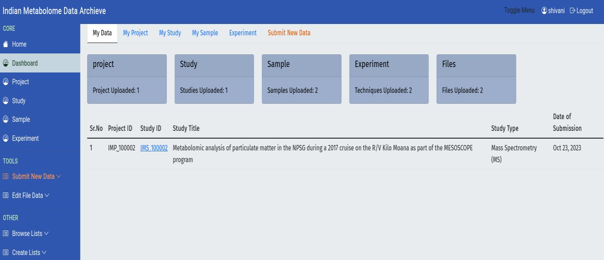
Register Project
Project registration establishes the high-level administrative umbrella for the data. A project can contain one or more related studies.
Purpose: Define the overall research initiative, funding source, and investigators responsible for the data.
| Required Field | Importance |
|---|---|
| Title* | Concise name for the research effort or consortium. |
| Project Contributors* | Lists key people involved in the project. |
| Research Area* | Categorizes the scientific domain, such as Biological Sciences. |
| Funding Source* | Tracks the grant or funding body supporting data generation. |
| Project Description* | Summarizes the goal and scope of the data collection effort. |
Final Action:
- Fill all fields marked with an asterisk.
- Check the funding source carefully.
- Click Submit to generate the project identifier.
Project vs Study
The Project defines the who and why. The Study defines the specific experiment.
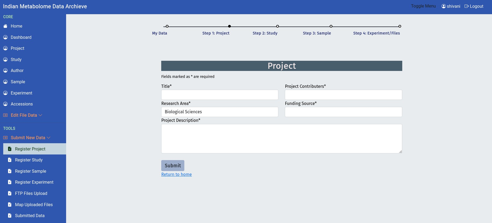
Register Study
Study registration defines the scientific context and experimental design. The study is linked to the registered project.
Workflow Action: Select the relevant Project ID, then complete the Study Details and Author List sections.
Study Details
| Required Field | Purpose |
|---|---|
| Title* | Descriptive title of the experiment. |
| Study Type* | Analytical technology used, such as MS or NMR. |
| Data Type / Summary | Targeted or untargeted scope and a summary of the study. |
| Release Date* | Date on which the data can become publicly available. |
| Publication / Approval | DOI or required IEC/IBSC/institutional approval reference. |
Author List
Click Add Author to include all contributors. Check names, emails, and affiliations because these details support final attribution.
Final Action: Click Submit. The portal assigns a study accession or study identifier such as IMS_xxxxxx.
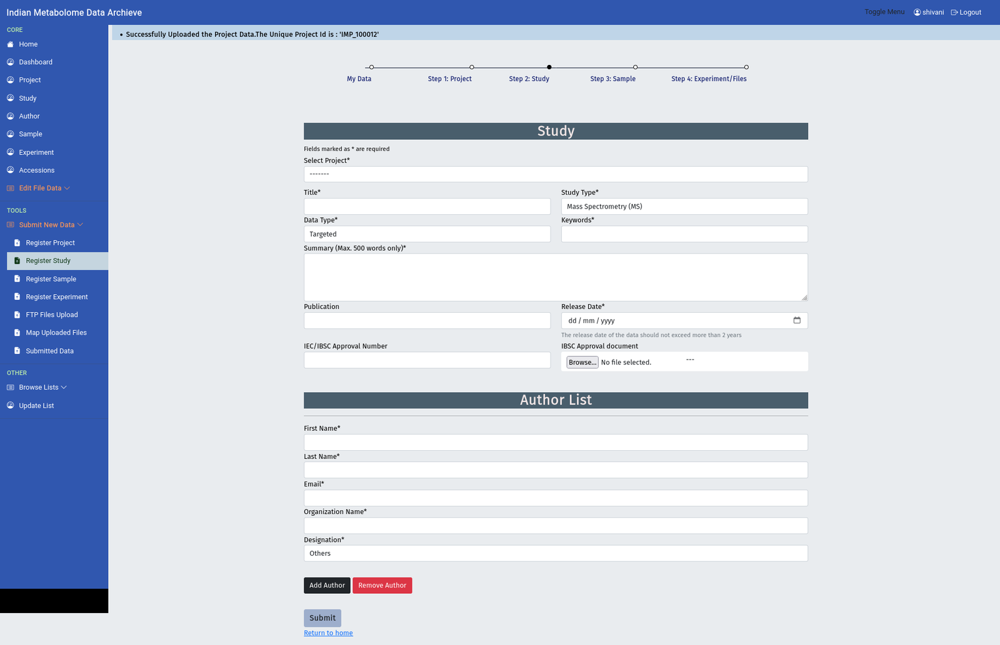
Register Sample
Sample registration defines the origin, source, classification, and file count for all samples.
| Required Field | Importance |
|---|---|
| Select Study* | Links sample details to the correct Study ID. |
| Source* | Primary sample origin, such as tissue, cell culture, or biofluid. |
| Organism Name* | Full organism name. |
| Taxonomy ID* | System-fetched taxonomy ID; verify it for accuracy. |
| Sample File Template* | Spreadsheet used to upload sample details. |
Template Requirements
- File Count: Enter the correct value in the Number of files per sample column.
- Sample ID Cross-Reference: After template submission, IMDA generates sample IDs. Use those IDs in the experiment template.
- No Blank Cells: Use NA when information is not applicable.
Final Action:
- Download and complete the sample file template.
- Upload it using Choose File.
- Click Submit to register sample metadata.
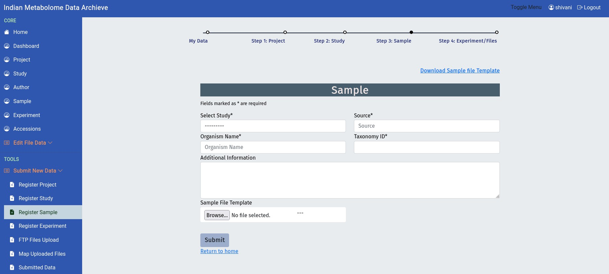
Zip and MD5checksum
Generate checksums before transferring data files. The MD5 checksum confirms that the uploaded file is identical to the local source file.
Access the Tool: IMDA MD5 Checksum Tool.
Procedure
- Download the script for Windows, macOS, or Linux.
- Run the script in the directory containing the raw data files.
- Confirm that the script generates
md5sum.txt. - Use the checksum values from
md5sum.txtduring file mapping.
Checksum Rules
Enter MD5 checksum values in lowercase and make sure each checksum corresponds to the exact ZIP file uploaded.
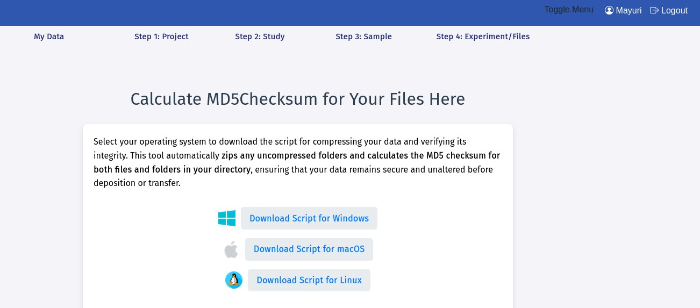
Register Experiment
Experiment registration captures the analytical workflow and processed metabolite data.
Key Actions:
- Select the analytical technique, such as MS or NMR.
- Download and complete the appropriate experiment template.
- Upload the analytical template and metabolite or compound file.
| Template Category | Example Columns | Mandatory Rules |
|---|---|---|
| Mass Spectrometry (MS) | Mass Spectrometer Type, MS Instrument Name, MS Ionization Method | Use dropdown lists where provided. |
| Nuclear Magnetic Resonance (NMR) | NMR Instrument Name, NMR Type, NMR Solvent | Do not change column headers. |
Cross-Reference and Data Integrity
- Retrieve sample IDs from Register Sample or My Sample and enter them in the template.
- Enter the MD5 checksum for each final zipped raw data file.
- Ensure the metabolite or compound file includes metabolite name, SMILES string, InChI ID, and quantification data where applicable.
- Match file names in the template exactly with files uploaded to the FTP server.
- Use NA for fields that are required but genuinely not applicable.
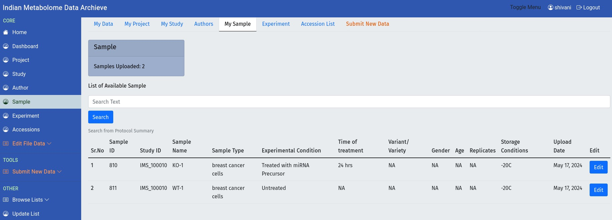
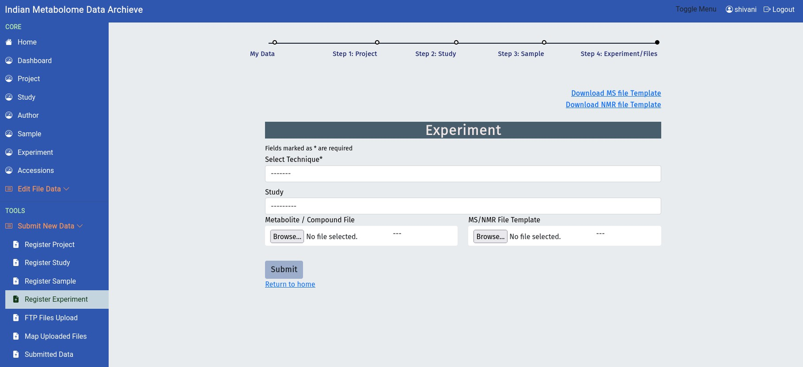
FTP Files Upload
Use the FTP credentials provided by IMDA to transfer zipped data archives.
| Detail | Purpose |
|---|---|
| HOSTNAME, USERNAME, PASSWORD | Credentials for the FTP transfer. |
| Project Folder | Select the project folder first. |
| Study Folder | Select the correct study folder before uploading files. |
FileZilla Procedure:
- Open FileZilla or another FTP client.
- Enter the host, username, and password from the portal.
- Navigate to the project folder.
- Open the correct study folder.
- Upload all zipped raw/derived data files.
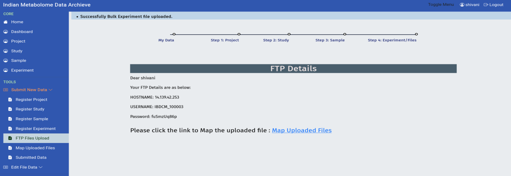
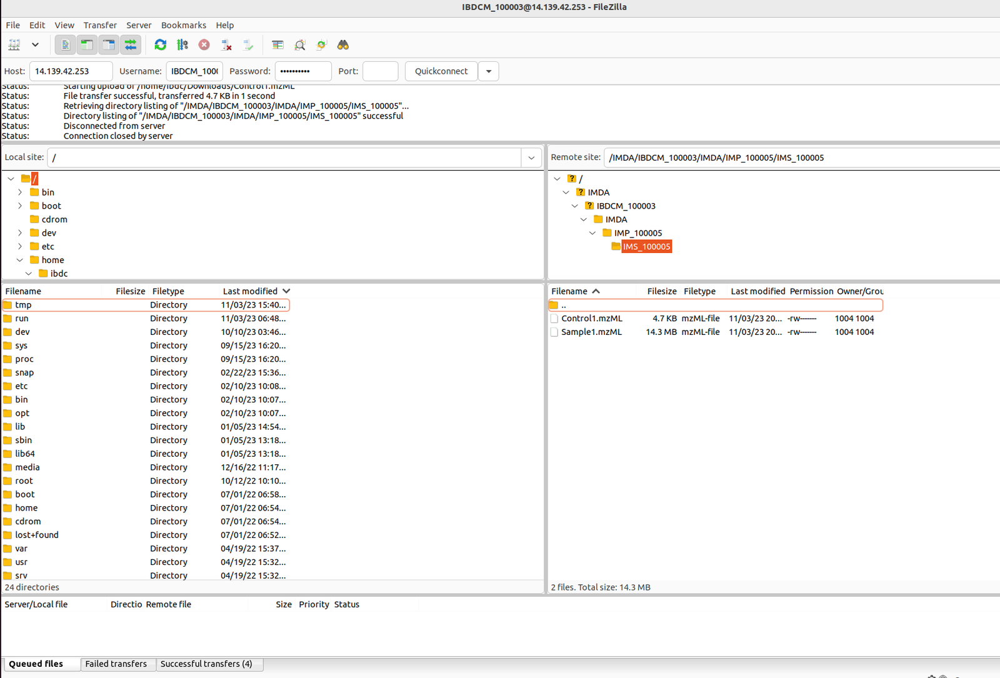
Map Uploaded Files
Mapping links the FTP-transferred files to the sample and assay metadata.
Action: Click Map Uploaded Files in the sidebar.
Mapping and Validation
- Verify that all uploaded files appear under the correct Study ID.
- Link each file to the correct sample ID and protocol.
- Enter the matching MD5 checksum.
- Confirm every sample has its corresponding raw and/or processed data file.
- Click Validate All Files For This Study only after checking all metadata and file mappings.
Final Submission Control
After final validation, direct edit options for project, study, and sample metadata may disappear. Check all details before clicking the final validation button.
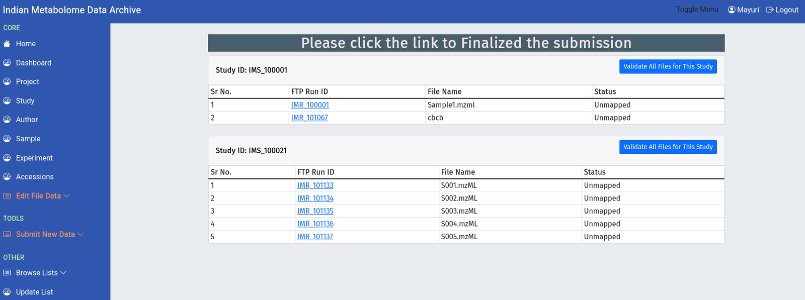
Submitted Data
Use Submitted Data to monitor submitted studies and curation progress.
Tracking Your Study
- Review the table for Project ID, Study ID, Study Title, and Date of Submission.
- Open the Study ID or row details to view full metadata and current status.
- Use the final IMP_xxxxxx and IMS_xxxxxx accession identifiers for citation after release.
| Status | Meaning | Action Required |
|---|---|---|
| Submitted | Initial state awaiting review. | None unless IMDA contacts you. |
| In Curation | Curator is reviewing metadata and data files. | Check registered email frequently. |
| Public | Study is released for download. | Cite the final accession identifiers. |
Processing Timeline
The testing portal states that submissions are processed within 7 days, and submitters are notified by email.
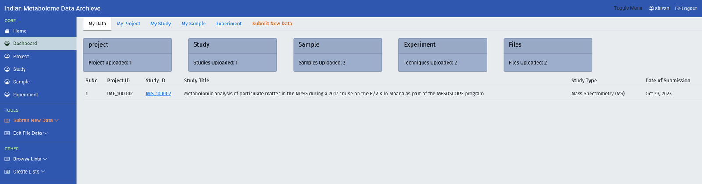
Edit File Data
Use Edit File Data only when metadata or file corrections are required before final validation or during curator-requested correction.
Edit Availability
| Submission Status | Edit Button Status | Required Action |
|---|---|---|
| Pre-Submission | Active | Click the edit option for the relevant row. |
| Post-Submission | Disabled or hidden | Contact IMDA support to request temporary edit access. |
Common Edit Actions
- Edit Project / Study / Sample Details: Correct metadata before final validation.
- Edit Upload Run: Replace corrupted or incorrect raw data files.
- Edit Metabolite / Compound File: Replace the processed metabolite summary file.
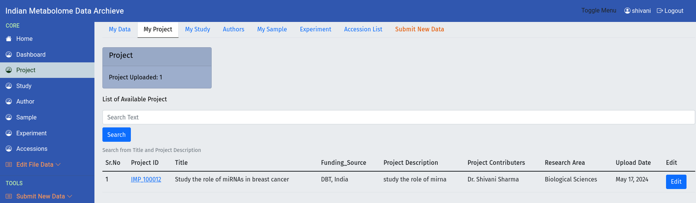
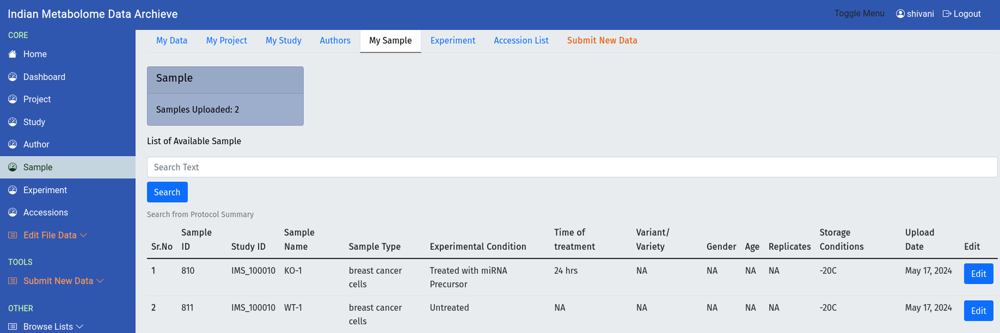
Browse Lists
Use Browse Lists to review existing controlled terms before requesting a new term.
Action: Search the existing lists for organism, source, and MS/NMR instrument terms before submitting a new controlled vocabulary request.
Avoid Duplicate Terms
If the required term already exists in Browse Lists, use the existing term instead of requesting a new one.
Update List
Use Update List when a required organism, source, or instrument term is missing from the controlled vocabulary.
Procedure:
- Confirm that the term does not already exist in Browse Lists.
- Enter the new term and term type.
- Submit the request.
- Wait for administrator review and approval before using the new term.
Interoperability
Controlled vocabulary standardization improves data interoperability and consistency across IMDA submissions.
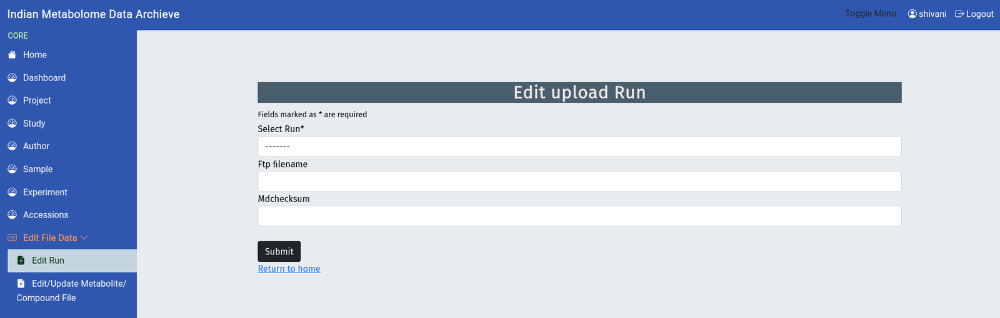
Reviewer Access URL
Use the reviewer access URL to share private study records with journal reviewers or collaborators.
Action: Open the submitted study details and locate URLs to Share Study Records.
Security Rate-Limit Policy
- Only 5 unique individuals can access the shared link within a 24-hour period.
- If the limit is reached, additional users must wait until the 24-hour window resets.
Generate the Secure Link
- Click Activate Link.
- Use Copy to copy the URL.
- Share the URL with the journal editor or reviewer.
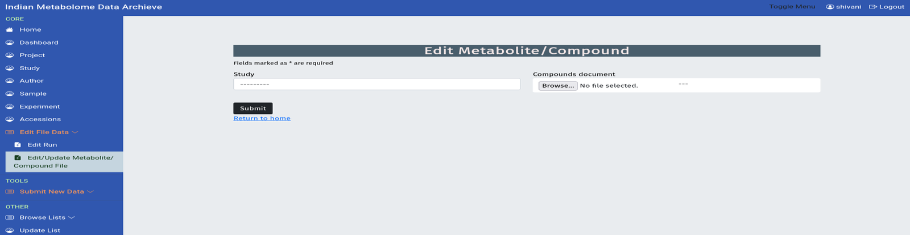
Support and Citation
When citing submitted data, use the IMDA/IBDC citation wording and accession identifiers assigned by the portal.
| Item | Guidance |
|---|---|
| Repository | Indian Metabolome Data Archive (IMDA) of the Indian Biological Data Centre (IBDC). |
| Project Accession | Use the assigned IMP_xxxxxx identifier. |
| Study Accession | Use the assigned IMS_xxxxxx identifier. |
| Support Email | Contact imdasupport@ibdc.rcb.res.in for assistance. |